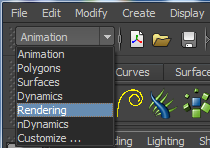
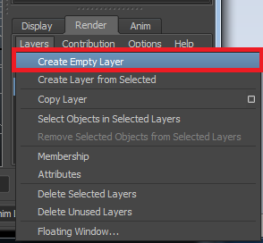

You are here: Home → Rendering
Rendering
Now that you have finished lighting, shading, animation, rigging and modeling (whew) it's time to start the final stretch: turn those Maya files into beautiful movies. The first step is actually creating images from maya. You have already rendered some images in the Lighting and Shading portions, so there may be some review.
Maya's Rendering Engines
Maya comes with three different engines for rendering images. Other's exist, such as RenderMan from Pixar, but aren't included in the default Maya installation.
Maya Software
Maya's software renderer, as described by Maya's online manual, is an advanced, multi-threaded renderer. It is based on a rendering technology that is built directly into Maya's dependency graph architecture. Technical things aside, it is the default renderer that comes with Maya, but since Mental Ray was developed it's not been used too much.
Maya Hardware
Maya's hardware renderer presents a seamlessly integrated rendering solution that takes advantage of graphics cards to render frames. It is very similar to Maya Software so again, we won't be using it as our main renderer of choice.
Mental Ray
Mental Ray is the most feature-rich renderer that comes with Maya and is specialized in ray tracing, though it does support other rendering algorithms. This is the renderer we will be using in this class! If you are unable to render using Mental Ray because it does not appear as an option, you must load Mayatomr through the Plug-in Manager. You can access the Plug-in Manager by going to Window → Settings/Preferences → Plug-in Manager.
In the Plug-in Manager, load Mayatomr.bundle for Macs or Mayatomr.mll for Windows.
You should now be able to use Mental Ray!
Now it is easy to see what object will appear when you render.
Render Settings
Under Render Settings is where you specify the size, quality, image format, and from which camera to render from for your images. To open the Render Settings window, go to Window → Rendering Editors → Render Settings.
Select the format of your rendered images. Use TIFF(tif).
You want to be able to Batch Render which will render each frame in a range that you input, so set Frame/Animation ext to something that is not a single frame.
In general, set Frame padding value so that when you open image sequences the order of the images is clear.
Set the frame range and the camera.
The final short that you submit must be 720HD. To make sure that you render with this setting, under Image Size, set Presets to 720HD and you should see that the Width adjusts to 1280 and the Height adjusts to 720.
Also for your final short, make sure to set the quality of your renders to Production. However you may leave it at Draft for test renders since rendering with production quality might take longer.
Batch Rendering
After you have double checked your Render Settings you are ready to start your Batch Render. To batch render, go to the Rendering menu.

Render → Batch Render
Now, sit back, relax and watch this great video tutorial on batch rendering.
Extra for Experts
In this section, you will learn how to set up an ambient occlusion layer.
In the channel box under the Render tab, click on Layers → Create Empty Layer. Rename this layer to something like AO for ambient occlusion since we will be creating an ambient occlusion render layer.

Select the objects in your scene that you like to render in ambient occlusion. Then right click on the AO render layer and click on Add Selected Objects.
Now you need to set the attributes of this render layer in order for it to render ambient occlusion. Right click on the AO render layer and click Attributes.

The Attribute Editor should appear. Click on Presets → then choose Occlusion.
Congratulations you have just created a render layer! :)